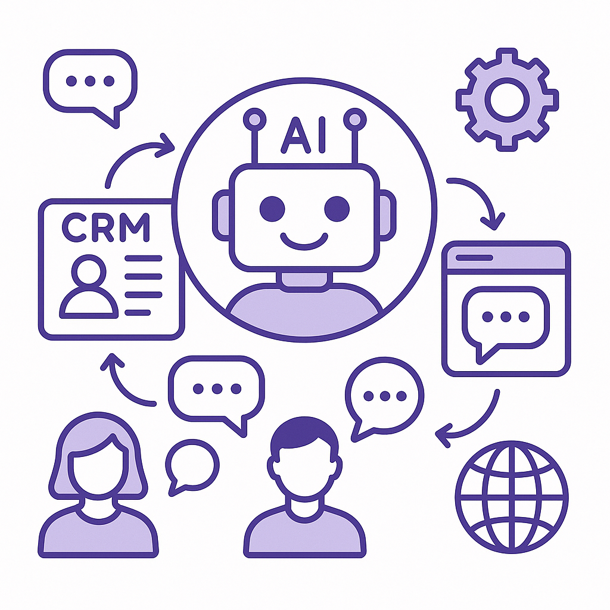
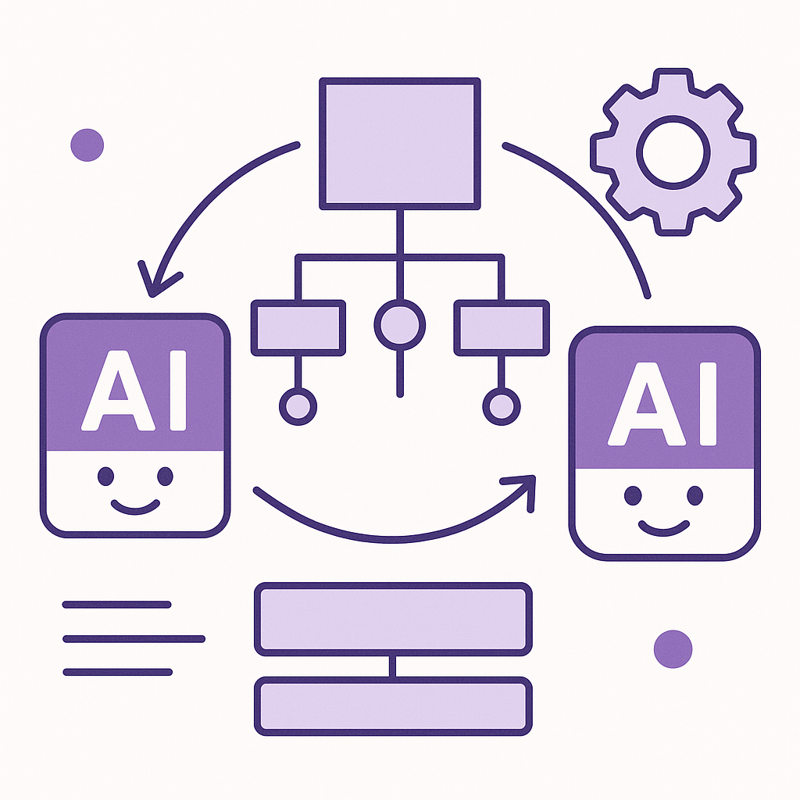

Publishing Recommendation
reviseThe drafted posts are solid in content but tend to be overly repetitive in structure and messaging, which might not engage the audience effectively. Some posts also need more concrete examples and clarity, especially in explaining how Purands AI's solutions work in specific contexts.
Today's drafts align well with trending topics but lack distinctive insights and originality. They often repeat similar points across different posts, which could dilute the brand's voice. Revising for variety and depth will better capture the practical insights Purands AI aims to deliver. The comments are well-crafted, providing valuable perspectives on current industry events.
LinkedIn Posts (10)
1. Snowflake reports Q2 revenue up 35% YoY to $1.55B ★ Purands solution · high priority
CTA: How are you leveraging data platforms to boost your retention marketing?
Caption: Snowflake's Q2 revenue growth highlights data platform trends.
Alternative hooks
- Snowflake's revenue just hit $1.55 billion - here's what that means for your business.
- Data platforms like Snowflake are reshaping the retention marketing landscape.
- 35% revenue growth for Snowflake: why data platforms are crucial for retention.
Research behind this post (sources, summaries & confidence)
Snowflake reports Q2 revenue up 35% YoY to $1.55B conf 0.90 · Customer Data Platforms
Snowflake's growth underscores the increasing reliance on data platforms to drive business insights, which are essential for effective retention marketing and customer data management.
Sources & what I took from each
- Snowflake revenue growth: Official financial reports indicate a significant year-over-year revenue increase for Snowflake. ↗ read source
- Data platform reliance: Industry trends show growing dependency on data platforms like Snowflake for analytics and insights. ↗ read source
Statistics
- 35% year-over-year revenue growth for Snowflake, reaching $1.55 billion.
Original trend links
Risks / caveats
- Market saturation could limit future growth.
- Potential competition from emerging data platforms.
2. Sephora to pilot TikTok Shop experience ★ Purands solution · high priority
CTA: How do you see social commerce platforms like TikTok influencing your customer engagement strategies?
Alternative hooks
- Sephora is testing TikTok Shop - a game-changer for social commerce.
- Social commerce is evolving fast, thanks to Sephora's TikTok Shop pilot.
- Wondering how TikTok Shop could impact your brand's strategy?
Research behind this post (sources, summaries & confidence)
Sephora to pilot TikTok Shop experience conf 0.85 · WhatsApp commerce
Sephora's pilot of TikTok Shop signals a shift towards integrating social commerce platforms, which could influence how brands engage with customers on messaging apps like WhatsApp for retention marketing.
Sources & what I took from each
- TikTok Shop experience: Sephora's collaboration with TikTok to pilot social commerce initiatives has been confirmed in industry news. ↗ read source
- Social commerce integration: The trend of integrating social commerce platforms is gaining traction among leading retail brands. ↗ read source
Original trend links
Risks / caveats
- Potential challenges in aligning brand identity with social media trends.
- Privacy and data security concerns associated with social commerce platforms.
3. Williams-Sonoma AI assistants drive customer engagement — and conversions ★ Purands solution · high priority
CTA: How do you see AI changing your approach to customer engagement?
Alternative hooks
- AI assistants are not just hype; they deliver real engagement.
- What do Williams-Sonoma and Purands AI have in common? AI-powered customer engagement.
- Increased conversions at Williams-Sonoma point to AI's potential in retention.
Research behind this post (sources, summaries & confidence)
Williams-Sonoma AI assistants drive customer engagement — and conversions conf 0.85 · AI industry
The success of AI assistants in driving engagement and conversions at Williams-Sonoma highlights the potential of AI in enhancing customer retention and loyalty programs.
Sources & what I took from each
- AI assistants: Williams-Sonoma's implementation of AI assistants has been widely reported in retail industry news. ↗ read source
- Customer engagement and conversions: Data from Williams-Sonoma indicates increased customer engagement and conversion rates due to AI assistants. ↗ read source
Original trend links
Risks / caveats
- Over-reliance on AI could lead to potential customer service issues.
- Privacy concerns regarding data collected by AI systems.
4. Amazon’s AI assistant can now spot fake emails from the company ★ Purands solution · high priority
CTA: How do you ensure secure interactions with your customers?
{kind=link}
Image prompt · isometric-flat
Caption: AI enhancing email security in digital interactions.
Alternative hooks
- Amazon's AI can now sniff out fake emails.
- Spotting fake emails: Amazon's AI does it.
- Ever worry about fake emails? Amazon's AI has a solution.
Research behind this post (sources, summaries & confidence)
Amazon’s AI assistant can now spot fake emails from the company conf 0.80 · AI industry
Enhancing AI capabilities to detect scams is crucial for building trust in digital communications, which is vital for retention marketing strategies that rely on secure and reliable customer interactions.
Sources & what I took from each
- AI assistant spotting fake emails: Amazon has announced updates to its AI assistant capabilities to enhance email verification. ↗ read source
- Impersonation scams: The rise in impersonation scams has driven the need for improved AI detection tools. ↗ read source
Original trend links
Risks / caveats
- Dependence on AI for security could lead to over-reliance and potential oversights.
- False positives in email verification could affect customer experiences.
5. The Home Depot extends AI assistance in local stores ★ Purands solution · high priority
CTA: How do you see AI improving your customer interactions?
Alternative hooks
- The Home Depot is banking on AI to enhance your shopping trips.
- AI in stores is changing how customers experience retail.
- What happens when AI steps into your local hardware store?
Research behind this post (sources, summaries & confidence)
The Home Depot extends AI assistance in local stores conf 0.80 · AI industry
The expansion of AI assistance in retail environments demonstrates the growing trend of using AI to enhance the customer experience, which is a key component of retention marketing strategies.
Sources & what I took from each
- AI assistance in stores: The Home Depot has announced the extension of AI systems in its retail stores. ↗ read source
- Enhanced customer experience: Studies show that AI assistance in retail improves the customer shopping experience. ↗ read source
Original trend links
Risks / caveats
- Initial implementation costs could be high.
- Potential resistance from customers preferring human interaction.
6. Orchestration is the new challenge for CX in the age of AI agents ★ Purands solution · high priority
CTA: How are you addressing AI orchestration challenges in your CX strategy?

⬇ Download image{kind=link}
Image prompt · isometric-flat
Caption: Orchestrating AI agents for seamless CX.
Alternative hooks
- Struggling with AI agent chaos in customer interactions?
- Integration issues in CX? You're not alone.
- Why seamless orchestration is key to better retention marketing.
Research behind this post (sources, summaries & confidence)
Orchestration is the new challenge for CX in the age of AI agents conf 0.75 · AI industry
As companies deploy AI agents across various channels, orchestrating these systems becomes crucial for delivering a seamless customer experience, impacting retention marketing efforts.
Sources & what I took from each
- Orchestration challenge: Industry reports highlight orchestration as a key challenge in CX with AI deployments. ↗ read source
- CX and AI agents: Experts discuss the importance of AI agent orchestration for an improved customer experience. ↗ read source
Original trend links
Risks / caveats
- Complexity in integrating multiple AI systems.
- Potential for inconsistent customer experiences if orchestration fails.
7. Enterprise AI's real risk isn't autonomous agents. It's the complexity between them. ★ Purands solution · high priority
CTA: How do you manage the complexity between AI agents in your operations?

⬇ Download image{kind=link}
Image prompt · isometric-flat
Caption: Simplifying AI interactions to reduce complexity.
Alternative hooks
- Managing AI agent complexity is the real challenge in today's enterprise landscape.
- The future of AI isn't just about autonomy, it's about managing complexity.
- AI systems failing unexpectedly? The issue might be the complexity between agents.
Research behind this post (sources, summaries & confidence)
Enterprise AI's real risk isn't autonomous agents. It's the complexity between them. conf 0.70 · AI industry
As AI agents become more autonomous, managing the complexity between them is crucial for ensuring smooth operations in retention marketing. This discussion is relevant for building robust AI systems for customer engagement.
Sources & what I took from each
- Complexity between AI agents: Industry experts have noted the increasing complexity in managing interactions between multiple AI systems. ↗ read source
- Enterprise AI risk: Reports and analyses highlight the risks associated with the complexity of deploying multiple AI agents. ↗ read source
Original trend links
Risks / caveats
- Increased difficulty in debugging and maintaining AI systems.
- Potential for unexpected interactions leading to system failures.
8. Palo Alto Networks paid $500M for Thrive-backed Console
CTA: How do you see AI changing IT service in your industry?
Alternative hooks
- Palo Alto Networks just made a $500 million bet on AI.
- AI isn't just talk - Palo Alto Networks is putting $500 million on the line.
- Palo Alto Networks' latest move shows AI's growing role in IT.
Research behind this post (sources, summaries & confidence)
Palo Alto Networks paid $500M for Thrive-backed Console conf 0.90 · AI startups
The acquisition highlights the growing importance of AI-powered IT service automation, which could influence how AI is integrated into retention marketing operations, offering more efficient customer service and engagement.
Sources & what I took from each
- Palo Alto Networks acquisition: Official reports and press releases confirm the acquisition. ↗ read source
- AI IT service automation: Console's technology is known for enhancing IT service automation through AI. ↗ read source
Statistics
- Palo Alto Networks acquisition deal valued at $500 million.
Original trend links
- https://techcrunch.com/2026/09/02/palo-alto-networks-paid-500m-for-thrive-backed-console-sources-say
Risks / caveats
- Integration challenges post-acquisition.
- Potential overvaluation of the acquired company.
9. Railway secures $100 million to challenge AWS with AI-native cloud infrastructure
CTA: How do you think AI-native infrastructure will impact the cloud market?
Alternative hooks
- Railway just secured a $100 million boost to challenge the likes of AWS.
- Can AI-native infrastructure really take on the cloud giants?
- Another player enters the cloud race with $100 million in hand.
Research behind this post (sources, summaries & confidence)
Railway secures $100 million to challenge AWS with AI-native cloud infrastructure conf 0.85 · AI startups
Railway's funding highlights the competitive landscape in AI-native cloud infrastructure, which could offer new opportunities for building and scaling AI-driven retention marketing solutions.
Sources & what I took from each
- AI-native cloud infrastructure: Railway is developing infrastructure specifically designed for AI workloads. ↗ read source
- New funding: Railway has secured $100 million in recent funding rounds. ↗ read source
Statistics
- Railway's funding round amounted to $100 million.
Original trend links
Risks / caveats
- High competition from established cloud providers like AWS.
- Potential challenges in scaling operations to meet demand.
10. OpenAI's new reasoning technique alarms AI safety experts
CTA: What are your thoughts on balancing AI innovation with safety?
Alternative hooks
- AI safety experts are raising alarms over OpenAI's latest reasoning technique.
- Recurrent depth: A breakthrough or a liability in AI systems?
- Why OpenAI's new technique is causing a stir among AI safety experts.
Research behind this post (sources, summaries & confidence)
OpenAI's new reasoning technique alarms AI safety experts conf 0.80 · AI industry
OpenAI's introduction of a new reasoning technique raises significant safety concerns, which could impact the deployment of AI in retention marketing. Ensuring AI safety and reliability is crucial for customer trust and engagement.
Sources & what I took from each
- AI safety experts are alarmed: Reports from various AI safety forums and conferences indicate concerns over the new technique's unpredictability. ↗ read source
- New reasoning technique 'recurrent depth': OpenAI has published papers detailing the 'recurrent depth' technique, sparking debate in AI research communities. ↗ read source
Original trend links
Risks / caveats
- Potential for unexpected AI behavior leading to safety concerns.
- Challenges in predicting outcomes with new AI reasoning methods.
Today's Trends
| # | Trend | Category | Why it matters |
|---|---|---|---|
| 1 | OpenAI's new reasoning technique alarms AI safety experts
source |
AI industry | OpenAI's introduction of a new reasoning technique raises significant safety concerns, which could impact the deployment of AI in retention marketing. Ensuring AI safety and reliability is crucial for customer trust and engagement. |
| 2 | Palo Alto Networks paid $500M for Thrive-backed Console
source |
AI startups | The acquisition highlights the growing importance of AI-powered IT service automation, which could influence how AI is integrated into retention marketing operations, offering more efficient customer service and engagement. |
| 3 | Enterprise AI's real risk isn't autonomous agents. It's the complexity between them.
source |
AI industry | As AI agents become more autonomous, managing the complexity between them is crucial for ensuring smooth operations in retention marketing. This discussion is relevant for building robust AI systems for customer engagement. |
| 4 | Sephora to pilot TikTok Shop experience
source |
WhatsApp commerce | Sephora's pilot of TikTok Shop signals a shift towards integrating social commerce platforms, which could influence how brands engage with customers on messaging apps like WhatsApp for retention marketing. |
| 5 | Amazon’s AI assistant can now spot fake emails from the company
source |
AI industry | Enhancing AI capabilities to detect scams is crucial for building trust in digital communications, which is vital for retention marketing strategies that rely on secure and reliable customer interactions. |
| 6 | Snowflake reports Q2 revenue up 35% YoY to $1.55B
source |
Customer Data Platforms | Snowflake's growth underscores the increasing reliance on data platforms to drive business insights, which are essential for effective retention marketing and customer data management. |
| 7 | Williams-Sonoma AI assistants drive customer engagement — and conversions
source |
AI industry | The success of AI assistants in driving engagement and conversions at Williams-Sonoma highlights the potential of AI in enhancing customer retention and loyalty programs. |
| 8 | The Home Depot extends AI assistance in local stores
source |
AI industry | The expansion of AI assistance in retail environments demonstrates the growing trend of using AI to enhance the customer experience, which is a key component of retention marketing strategies. |
| 9 | Orchestration is the new challenge for CX in the age of AI agents
source |
AI industry | As companies deploy AI agents across various channels, orchestrating these systems becomes crucial for delivering a seamless customer experience, impacting retention marketing efforts. |
| 10 | Railway secures $100 million to challenge AWS with AI-native cloud infrastructure
source |
AI startups | Railway's funding highlights the competitive landscape in AI-native cloud infrastructure, which could offer new opportunities for building and scaling AI-driven retention marketing solutions. |
Risk Assessment
No risks flagged.
Suggested LinkedIn Comments (30)
Open each post, then paste the copied comment. Nothing is posted automatically.
1. opinion · rss:techcrunch.com — The Builders Stage is returning to TechCrunch Disrupt, bringing together founder
Post by: rss:techcrunch.com
Why it works: It highlights the value of practical discussions, aligning with the event's purpose and appealing to startup founders and operators.
↗ Open LinkedIn post to paste comment2. insight · rss:techcrunch.com — The acquisition also leaves Sequoia-backed Serval as the de facto startup leader
Post by: rss:techcrunch.com
Why it works: The comment acknowledges the strategic impact of acquisitions and sets expectations for future innovation, adding depth to the post.
↗ Open LinkedIn post to paste comment3. expansion · rss:techcrunch.com — On our new Real World AI stage, we’ll be focusing on the intersection between th
Post by: rss:techcrunch.com
Why it works: It expands on the post by providing examples of industries that could be impacted, making the concept more tangible.
↗ Open LinkedIn post to paste comment4. insight · rss:techcrunch.com — Google has dodged an effort to break up its ad business, but a judge said Wednes
Post by: rss:techcrunch.com
Why it works: The comment provides a balanced view on the implications of regulatory adjustments, adding context to the post.
↗ Open LinkedIn post to paste comment5. insight · rss:techcrunch.com — OpenAI’s new Astra model will use “recurrent depth,” a technique that allows the
Post by: rss:techcrunch.com
Why it works: It explains the potential impact of the new technique in AI, providing a clear understanding of why it matters.
↗ Open LinkedIn post to paste comment6. insight · rss:techcrunch.com — The once-dominant mapping app has surged to the top of Apple’s U.S. App Store af
Post by: rss:techcrunch.com
Why it works: The comment highlights the significance of brand values in user engagement, providing a fresh perspective on the app's success.
↗ Open LinkedIn post to paste comment7. opinion · rss:techcrunch.com — An identity theft search site claimed to have more than 150 million driver's lic
Post by: rss:techcrunch.com
Why it works: It stresses the importance of data security, a relevant and pressing issue, adding practical value to the post.
↗ Open LinkedIn post to paste comment8. insight · rss:techcrunch.com — If approved, the combined company would become one of the largest food delivery
Post by: rss:techcrunch.com
Why it works: The comment provides a nuanced view of potential outcomes from the merger, enhancing the discussion with its balanced perspective.
↗ Open LinkedIn post to paste comment9. opinion · rss:techcrunch.com — The internet has a trust problem, and it’s not just because social med
Post by: rss:techcrunch.com
Why it works: It addresses the core issue of trust and suggests a practical direction, aligning well with the post's theme.
↗ Open LinkedIn post to paste comment10. insight · rss:techcrunch.com — X says U.S. creator payouts will now be handled through its X Money payments ser
Post by: rss:techcrunch.com
Why it works: The comment touches on the potential benefits and challenges of the transition, providing a balanced take that enhances the original post.
↗ Open LinkedIn post to paste comment11. insight · rss:www.theverge.com — Uber beat out Waymo in launching a commercial robotaxi service in London, the ci
Post by: rss:www.theverge.com
Why it works: It acknowledges the milestone while highlighting the gap between current capabilities and true autonomy.
↗ Open LinkedIn post to paste comment12. respectful challenge · rss:www.theverge.com — Google launched Gemini 3.8 Flash, arriving just a few weeks after its predecesso
Post by: rss:www.theverge.com
Why it works: It questions the balance between speed and stability, an important consideration in AI development.
↗ Open LinkedIn post to paste comment13. expansion · rss:www.theverge.com — Summer is winding down, but REI’s Labor Day sale is here to help save you some b
Post by: rss:www.theverge.com
Why it works: It connects consumer behavior with marketing strategy, adding depth beyond the sales announcement.
↗ Open LinkedIn post to paste comment14. insight · rss:www.theverge.com — 1Password faced immediate backlash from customers this week over a $300,000 pled
Post by: rss:www.theverge.com
Why it works: It addresses the importance of brand alignment with social values, a critical factor in consumer trust.
↗ Open LinkedIn post to paste comment15. respectful challenge · rss:www.theverge.com — Amazon is trying to combat impersonation scams with a new feature that allows yo
Post by: rss:www.theverge.com
Why it works: It praises the feature while pointing out potential concerns, showing a balanced view.
↗ Open LinkedIn post to paste comment16. opinion · rss:www.theverge.com — I think automakers are finally getting the memo. Rather than try to reinvent the
Post by: rss:www.theverge.com
Why it works: It supports the design choice with a rationale that resonates with consumer behavior.
↗ Open LinkedIn post to paste comment17. insight · rss:www.theverge.com — The doors to Europe's largest consumer tech show haven't opened to the public ye
Post by: rss:www.theverge.com
Why it works: It provides a practical takeaway from an otherwise overwhelming event, giving readers a point to consider.
↗ Open LinkedIn post to paste comment18. opinion · rss:www.theverge.com — OpenAI is on the cusp of releasing its most powerful AI model yet, Astra, follow
Post by: rss:www.theverge.com
Why it works: It balances excitement about innovation with a call for caution, a necessary perspective on emerging tech.
↗ Open LinkedIn post to paste comment19. insight · rss:www.theverge.com — The Trump administration has intervened in The New York Times' copyright lawsuit
Post by: rss:www.theverge.com
Why it works: It provides a broader context on the implications of the legal case, adding depth to the discussion.
↗ Open LinkedIn post to paste comment20. expansion · rss:www.theverge.com — MrBeast will feature Gemini, Google Health, and the Fitbit Air in upcoming video
Post by: rss:www.theverge.com
Why it works: It connects the partnership to broader trends in media and technology, offering a fresh angle.
↗ Open LinkedIn post to paste comment21. opinion · rss:feeds.arstechnica.com — Congress pauses the OMB's attempt to rewrite how research is funded.
Post by: rss:feeds.arstechnica.com
Why it works: Offers a balanced view on the need for innovation and accountability in research funding.
↗ Open LinkedIn post to paste comment22. insight · rss:feeds.arstechnica.com — The FBI is reportedly investigating a massive data breach that is unfolding in r
Post by: rss:feeds.arstechnica.com
Why it works: Highlights the necessity for strong cybersecurity in a digital-first world.
↗ Open LinkedIn post to paste comment23. expansion · rss:feeds.arstechnica.com — Carrier scorecards may include call-blocking stats and data on customer complain
Post by: rss:feeds.arstechnica.com
Why it works: Explores the consumer empowerment angle, adding depth to the discussion about scorecards.
↗ Open LinkedIn post to paste comment24. insight · rss:feeds.arstechnica.com — "Requirements are being adjusted to reflect near-term mission needs."
Post by: rss:feeds.arstechnica.com
Why it works: Applies a real-world perspective on the importance of adaptive strategies.
↗ Open LinkedIn post to paste comment25. insight · rss:feeds.arstechnica.com — Google's Pro model updates are seemingly paused, but there's yet another Gemini
Post by: rss:feeds.arstechnica.com
Why it works: Analyzes the strategic implications of Google's product strategy shift.
↗ Open LinkedIn post to paste comment26. respectful challenge · rss:feeds.arstechnica.com — Trump’s secret reviews of frontier AI models may hide corruption, lawsuit says.
Post by: rss:feeds.arstechnica.com
Why it works: Addresses the importance of transparency in AI governance, challenging the secrecy involved.
↗ Open LinkedIn post to paste comment27. insight · rss:feeds.arstechnica.com — The DOJ proved to the court that Google acted illegally, but it won't get the bi
Post by: rss:feeds.arstechnica.com
Why it works: Acknowledges the complexities of legal actions against big tech, adding depth to the conversation.
↗ Open LinkedIn post to paste comment28. expansion · rss:feeds.arstechnica.com — He reported from space that only "fat" Japanese tree frogs enjoyed weightlessnes
Post by: rss:feeds.arstechnica.com
Why it works: Adds an interesting angle about biological adaptation, making the post more engaging.
↗ Open LinkedIn post to paste comment29. insight · rss:feeds.arstechnica.com — The Army says its laser system can track and destroy hostile drones.
Post by: rss:feeds.arstechnica.com
Why it works: Highlights the technological advancement in defense, emphasizing precision and efficiency.
↗ Open LinkedIn post to paste comment30. insight · rss:feeds.arstechnica.com — At least three of the first 32 Rassvet satellites likely suffered outright failu
Post by: rss:feeds.arstechnica.com
Why it works: Reflects on the unpredictability of space missions, underlining the importance of innovation.
↗ Open LinkedIn post to paste comment